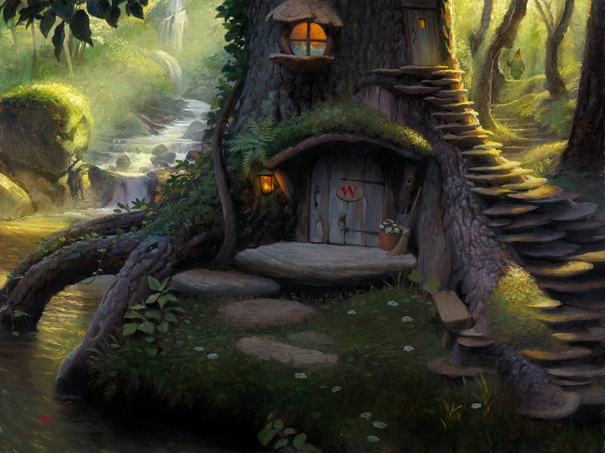
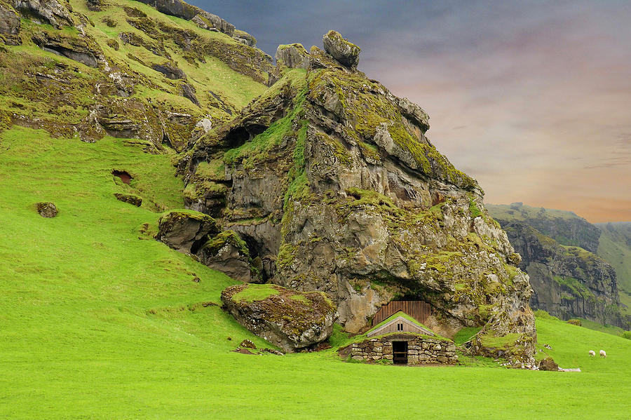

Onde Gnomos Moram?
Os locais e casas mais populares que nós construímos e vivemos. Muitos pensam que vivemos somente em tocas, e isto na verdade está até que bem correto, entretanto é legal pensarmos que possuímos diferentes tipos de casas na verdade, e não só um buraco no chão. Nós não só pensamos em diferentes maneiras de nos adaptarmos, como dependendo do gosto do gnomo, é bem provável que ele vá ter uma casa completamente diferente das duas que vou citar.
Casas na árvore
Um ambiente arbóreo em meio a vida selvagem.
Riachos, matos, animais, as casas nas árvores sempre são projetadas de forma a ter um maior contato em meio a floresta com o seu ecossistema. Normalmente, são construídas redes de casas em que nós consigamos viver, para que comumente, pudéssemos nos ajudar a viver, seja na coleta de cogumelos, como construírmos cada vez mais áreas, como pontes, mais casas e enfim, diria que as nossas casas arbóreas são acompanhadas de uma vida livre e em bando.
Casas de Pedras
Um ambiente rústico e definitivamente seguro.
Gnomos isolados, como eu preferem as casas de pedras. Por se tratarem de lares extremamente seguros, e separados do ambiente comum, já que as casas são construídas a partir das formações de rochas. Mas não é um problema, já que os cogumelos e diferentes vegetações se tornam possíveis de serem preservadas. Neste caso, nós sempre damos um jeito de viajar de tempos em tempos para nos encontrarmos com nosso povo, para tanto fazer trocas, quando para simplesmente receber notícias diferentes.
Por hoje isto é tudo, mais uma vez, grande satisfação do Gnomo Violeta.